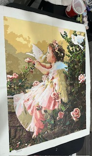
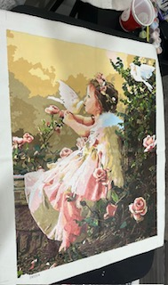

When i was a littl girl, my mom said you could put me in a room with 4 white walls, a white ceiling, and a white floor and my imagination would keep me busy for hours. as an adult I turned my imagination towards crafing. One of my first gos at recovery, someone intorduced me to paint by numbers (I may have an imagination, but getting those ideas on paper wasn't easy and I"m not good at drawying). As time has passed I've recently gotten into embroidery/cross stitch. I do a lot of crafting, I'll make a list later with some links to informatioan about some of the crafts.
I'm currently working on a cross stitch, the largest, most detailed one I've ever done by hand. It started as being a Christmas gift to my 19 year old step daughter who has been obsessed with antiques. She wants her house to look like a nana's house when you walk in the door. So she had fell in love with a framed cross stitch of stacked teacups while we were shopping at an anituqe mall in the area. I knew I had to figure out how to make the pattern or find it. I wound up finding one that got delivered the beginning of December so I hadn't had a lot of time. Needless to say I'm still working on it and it's going to be her birthday present in March.
 
